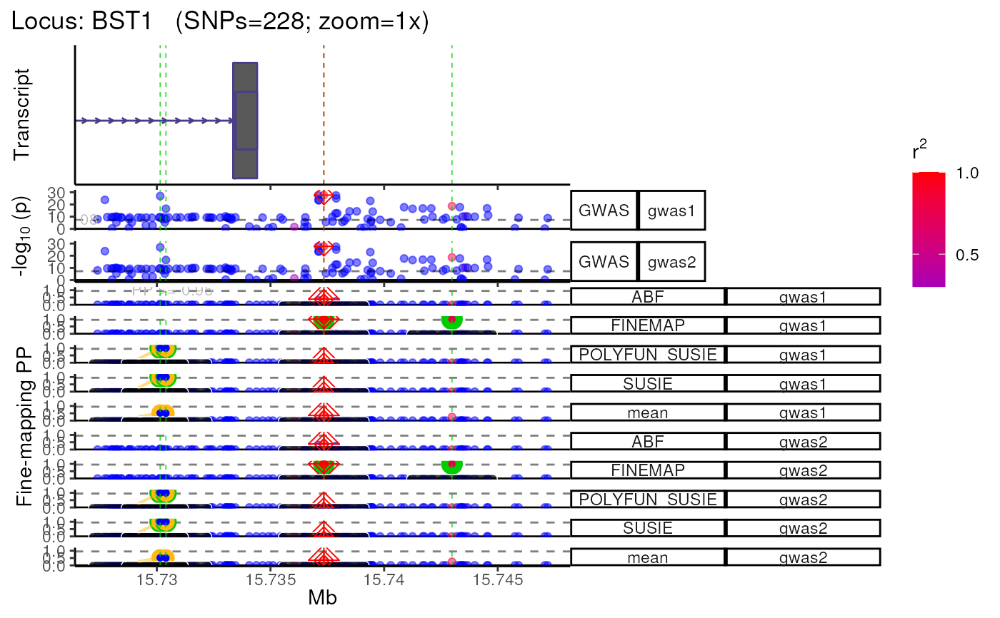

R/plot_locus_multi.R
plot_locus_multi.RdPlot multi-GWAS/QTL or multi-ancestry(i.e. trans-ethnic) fine-mapping results generated by tools like PAINTOR.
plot_locus_multi(
dat_ls,
LD_ls,
locus_dir,
conditions = names(dat_ls),
show_plot = TRUE,
verbose = TRUE,
...
)A named list of data.tables generated by
echolocatoR::finemap_loci.
A named list of link disequilibrium (LD) matrices
(one per item in dat_ls).
Storage directory to use.
Conditions to group dat_ls by.
The length of conditions must equal the number of
items in dat_ls.
Print plot to screen.
Print messages.
Arguments passed on to plot_locus
dataset_typeDataset type (e.g. "GWAS" or "eQTL").
color_r2Whether to color data points (SNPs) by how strongly they correlate with the lead SNP (i.g. LD measured in terms of r2).
finemap_methodsFine-mapping methods to plot tracks for, where the y-axis show the Posterior Probabilities (PP) of each SNP being causal.
track_orderThe order in which tracks should appear (from top to bottom).
track_heightsThe height of each track (from top to bottom).
plot_full_windowInclude a track with a Manhattan plot of the full GWAS/eQTL locus (not just the zoomed-in portion).
dot_summaryInclude a dot-summary plot that highlights the Lead, Credible Set, and Consensus SNPs.
qtl_suffixesIf columns with QTL data is included in dat,
you can indicate which columns those are with one or more string suffixes
(e.g. qtl_suffixes=c(".eQTL1",".eQTL2") to use the columns
"P.QTL1", "Effect.QTL1", "P.QTL2", "Effect.QTL2").
mean.PPInclude a track showing mean Posterior Probabilities (PP) averaged across all fine-mapping methods.
sig_cutoffFilters out SNPs to plot based on an (uncorrected) p-value significance cutoff.
gene_trackInclude a track showing gene bodies.
max_transcriptsMaximum number of transcripts per gene.
tx_biotypesTranscript biotypes to include in the gene model track.
By default (NULL), all transcript biotypes will be included.
See get_tx_biotypes for a full list of
all available biotypes
point_sizeSize of each data point.
point_alphaOpacity of each data point.
snp_group_linesInclude vertical lines to help highlight SNPs belonging to one or more of the following groups: Lead, Credible Set, Consensus.
labels_subsetInclude colored shapes and RSID labels to help highlight SNPs belonging to one or more of the following groups: Lead, Credible Set, Consensus.
xtextInclude x-axis title and text for each track (not just the lower-most one).
show_legend_genesShow the legend for the gene_track.
zoom_exceptions_strNames of tracks to exclude when zooming.
xgr_libnamesPassed to XGR_plot.
Which XGR annotations to check overlap with.
For full list of libraries see
here.
Passed to the RData.customised argument in xRDataLoader.
Examples:
"ENCODE_TFBS_ClusteredV3_CellTypes"
"ENCODE_DNaseI_ClusteredV3_CellTypes"
"Broad_Histone"
xgr_n_topPassed to XGR_plot. Number of top annotations to be plotted (passed to XGR_filter_sources and then XGR_filter_assays).
nott_epigenomeInclude tracks showing brain cell-type-specific epigenomic data from Nott et al. (2019).
nott_regulatory_rectsInclude track generated by NOTT2019_epigenomic_histograms.
nott_show_placseqInclude track generated by NOTT2019_plac_seq_plot.
nott_binwidthWhen including Nott et al. (2019) epigenomic data in the track plots, adjust the bin width of the histograms.
nott_bigwig_dirInstead of pulling Nott et al. (2019) epigenomic data from the UCSC Genome Browser, use a set of local bigwig files.
roadmapFind and plot annotations from Roadmap.
roadmap_n_topPassed to ROADMAP_plot. Number of top annotations to be plotted (passed to ROADMAP_query).
roadmap_queryOnly plot annotations from Roadmap whose
metadata contains a string or any items from a list of strings
(e.g. "brain" or c("brain","liver","monocytes")).
credset_threshThe minimum fine-mapped posterior probability
for a SNP to be considered part of a Credible Set.
For example, credset_thresh=.95 means that all Credible Set SNPs
will be 95% Credible Set SNPs.
facet_formulaFormula to facet plots by. See facet_grid for details.
save_plotSave plot as RDS file.
plot_formatFormat to save plot as when saving with ggsave.
save_RDSSave the tracks as an RDS file (Warning: These plots take up a lot disk space).
return_listReturn a named list with each track as a separate plot
(default: FALSE). If TRUE, will return a merged plot using
wrap_plots.
datData to query transcripts with.
LD_referenceLD reference to use:
"1KGphase1" : 1000 Genomes Project Phase 1 (genome build: hg19).
"1KGphase3" : 1000 Genomes Project Phase 3 (genome build: hg19).
"UKB" : Pre-computed LD from a British European-decent subset of UK Biobank. Genome build : hg19
"<vcf_path>" : User-supplied path to a custom VCF file
to compute LD matrix from.
Accepted formats: .vcf / .vcf.gz / .vcf.bgz
Genome build : defined by user with target_genome.
"<matrix_path>" : User-supplied path to a pre-computed LD matrix
Accepted formats: .rds / .rda / .csv /
.tsv / .txt
Genome build : defined by user with target_genome.
conda_envConda environments to search in.
If NULL (default), will search all conda environments.
nThreadNumber of threads to parallelize over.
LD_matrixLD matrix.
zoomZoom into the center of the locus when plotting (without editing the fine-mapping results file). You can provide either:
The size of your plot window in terms of basepairs
(e.g. zoom=50000 for a 50kb window).
How much you want to zoom in (e.g. zoom="1x"
for the full locus, zoom="2x"
for 2x zoom into the center of the locus, etc.).
You can pass a list of window sizes (e.g. c(50000,100000,500000))
to automatically generate
multiple views of each locus.
This can even be a mix of different style inputs: e.g.
c("1x","4.5x",25000).
genomic_unitsWhich genomic units to return window limits in.
density_adjustPassed to adjust argument in
geom_density.
strip.text.y.angleAngle of the y-axis facet labels.
dpidpi to use for raster graphics
heightheight (defaults to the height of current plotting window)
widthwidth (defaults to the width of current plotting window)
consensus_threshThe minimum number of fine-mapping tools in which a SNP is in the Credible Set in order to be included in the "Consensus_SNP" column.
locus_dir <- file.path(tempdir(),echodata::locus_dir)
#### Make dat_ls ####
dat <- echodata::filter_snps(echodata::BST1, bp_distance = 10000)
#> FILTER:: Filtering by SNP features.
#> + FILTER:: Post-filtered data: 114 x 26
dat_ls <- list(gwas1=dat, gwas2=dat)
#### Make LD_ls ####
LD_matrix <- echodata::BST1_LD_matrix
LD_ls <- list(ancestry1=LD_matrix, ancestry2=LD_matrix)
#### Make plot ####
plot_list <- plot_locus_multi(dat_ls = dat_ls,
LD_ls = LD_ls,
locus_dir = locus_dir)
#> LD_matrix detected. Coloring SNPs by LD with lead SNP.
#> Filling r/r2 NAs with 0
#> LD_matrix detected. Coloring SNPs by LD with lead SNP.
#> Filling r/r2 NAs with 0
#> +-------- Locus Plot: BST1 --------+
#> + support_thresh = 2
#> + Calculating mean Posterior Probability (mean.PP)...
#> + 4 fine-mapping methods used.
#> + 8 Credible Set SNPs identified.
#> + 4 Consensus SNPs identified.
#> + Filling NAs in CS cols with 0.
#> + Filling NAs in PP cols with 0.
#> ++ echoplot:: GWAS full window track
#> ++ echoplot:: GWAS track
#> ++ echoplot:: Merged fine-mapping track
#> Melting PP and CS from 5 fine-mapping methods.
#> + echoplot:: Constructing SNP labels.
#> Adding SNP group labels to locus plot.
#> ++ echoplot:: Adding Gene model track.
#> Converting dat to GRanges object.
#> max_transcripts= 1 .
#> 1 transcripts from 1 genes returned.
#> Fetching data...
#> OK
#> Parsing exons...
#> OK
#> Defining introns...
#> OK
#> Defining UTRs...
#> OK
#> Defining CDS...
#> OK
#> aggregating...
#> Done
#> Constructing graphics...
#> + Adding vertical lines to highlight SNP groups.
#> +>+>+>+>+ zoom = 1x +<+<+<+<+
#> + echoplot:: Get window suffix...
#> + echoplot:: Removing GWAS full window track @ zoom=1x
#> + Removing subplot margins...
#> + Reordering tracks...
#> + Ensuring last track shows genomic units.
#> + Aligning xlimits for each subplot...
#> + Checking track heights...
